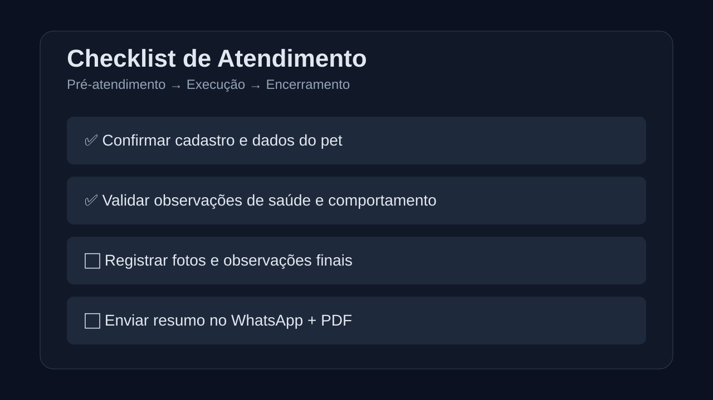
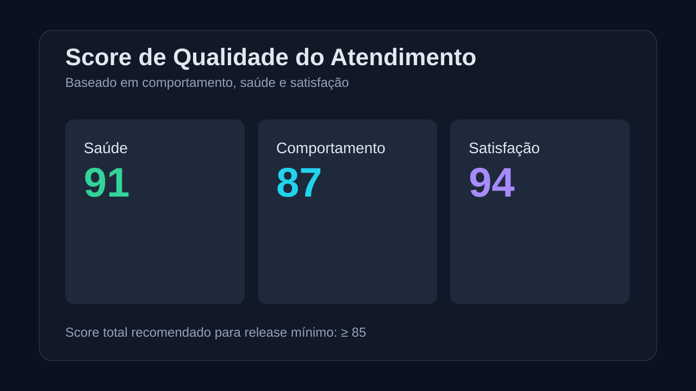
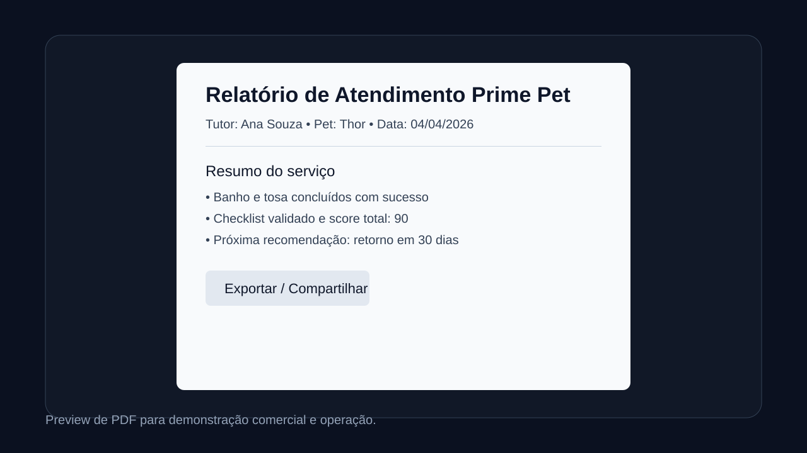

Uma landing mais visual para vender o fluxo completo de atendimento pet.
Esta página resume o valor do produto, mostra evidências operacionais (checklist, score e PDF) e prepara a trilha para release quando o fluxo mínimo estiver concluído.
Esta página resume o valor do produto, mostra evidências operacionais (checklist, score e PDF) e prepara a trilha para release quando o fluxo mínimo estiver concluído.
Material de demo para checklist, score de qualidade e exportação em PDF.



docs/planning/NEXT_STEPS_ISSUES.md..github/ISSUE_TEMPLATE/.docs/legacy/RELEASE_MINIMO_CHECKLIST.md.